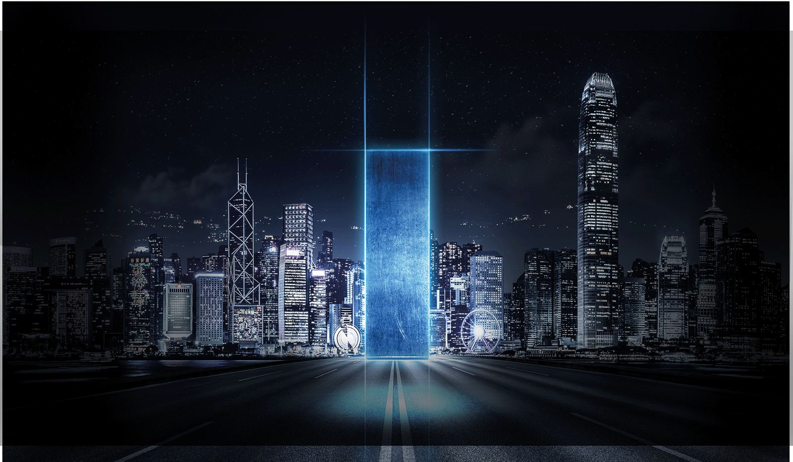
Company profile
Telmotor:
il tuo partner
per l’innovazione
Automazione industriale · Distribuzione di energia · Illuminotecnica · Digital innovation
OBIETTIVO aprire con energia e posizionare Telmotor come partner, non come fornitore.
Il titolo entra da solo.
"Buongiorno e grazie del tempo. In pochi minuti vi racconto chi è Telmotor e, soprattutto, perché le aziende che lavorano con noi ci considerano un partner per l'innovazione, non un semplice distributore."
→ Passa alla slide successiva.
Con Telmotor
il futuro
è già presente
Telmotor è il tuo partner per le soluzioni di automazione industriale, distribuzione di energia, illuminotecnica e digital innovation.
Da oltre 50 anni accompagniamo le aziende nel futuro con una competenza specialistica in soluzioni integrate a 360° per il mondo dell’industria, delle infrastrutture e del terziario, ai quali offriamo fornitura e distribuzione di prodotti e marchi di qualità, servizi di consulenza, supporto alla progettazione, assistenza tecnica e percorsi su misura per la digital transformation grazie anche alle competenze del network Diginnova.
Lo facciamo portando sui mercati e sui territori l’innovazione che abbiamo dentro, valorizzando le persone, sostenendo le comunità e tutelando l’ambiente.
OBIETTIVO la promessa in una frase.
Il claim e il posizionamento entrano automaticamente.
"Con Telmotor il futuro è già presente: siamo il partner per automazione industriale, distribuzione di energia, illuminotecnica e digital innovation."
CLIC → compare il testo descrittivo.
"Da oltre 50 anni non vendiamo solo prodotti: offriamo consulenza, supporto alla progettazione, assistenza tecnica e percorsi di digital transformation, anche grazie al network Diginnova. E lo facciamo valorizzando persone, comunità e ambiente."
DOMANDA AL CLIENTE "Su quale di questi ambiti state lavorando oggi?"
Numeri
I nostri numeri
Persone
Dimensione
Logistica
Servizio
OBIETTIVO dare solidità con i numeri, un blocco alla volta.
CLIC 1 PERSONE → "340 dipendenti, di cui 100 tecnici specializzati, e 55 agenti sul territorio."
CLIC 2 DIMENSIONE → "12 filiali, oltre 50 anni di innovazione e 200 milioni di euro di fatturato nel 2025."
CLIC 3 LOGISTICA → "8 magazzini verticali e 18.000 articoli gestiti a magazzino: disponibilità immediata."
CLIC 4 SERVIZIO → "80.000 ore l'anno di assistenza tecnica e 1.000 ore di formazione Academy."
MESSAGGIO CHIAVE un tecnico ogni tre persone. Il servizio è nel nostro DNA.
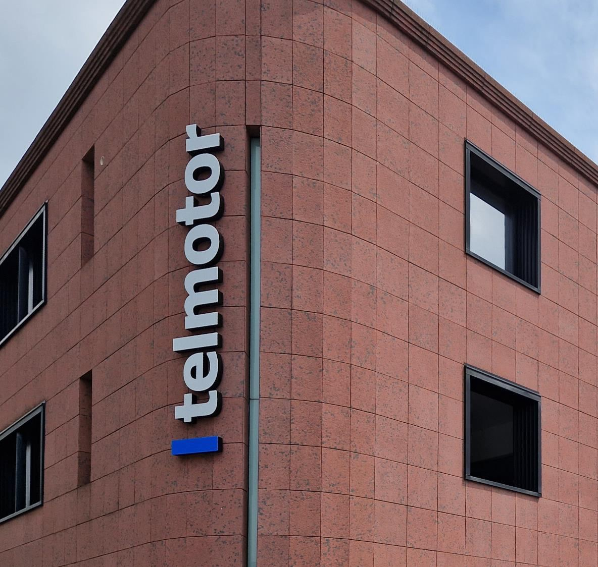
Territorio
Le filiali
12filiali in sei regioni
- Bergamo
- Brescia
- Crema
- Firenze
- Lecco
- Milano
- Padova
- Reggio Emilia
- Roma
- Torino
- Varese
- Verona
OBIETTIVO vicinanza al cliente.
Titolo e immagine entrano da soli.
CLIC → compare l'elenco delle filiali.
"Abbiamo 12 filiali tra Lombardia, Veneto, Piemonte, Emilia-Romagna, Toscana e Lazio: Bergamo, Brescia, Crema, Firenze, Lecco, Milano, Padova, Reggio Emilia, Roma, Torino, Varese e Verona. Questo significa tecnici vicini a voi e tempi di risposta rapidi."
SUGGERIMENTO cita la filiale più vicina al cliente.
Cosa ci distingue
Tratto distintivo
01
Innovazione
02
Servizio tecnico
03
Soluzioni integrate
OBIETTIVO annunciare i tre pilastri (si approfondiscono nella slide successiva).
CLIC 1 01 Innovazione
CLIC 2 02 Servizio tecnico
CLIC 3 03 Soluzioni integrate
"Tre cose ci distinguono: innovazione, servizio tecnico e soluzioni integrate. Vediamole una per una."
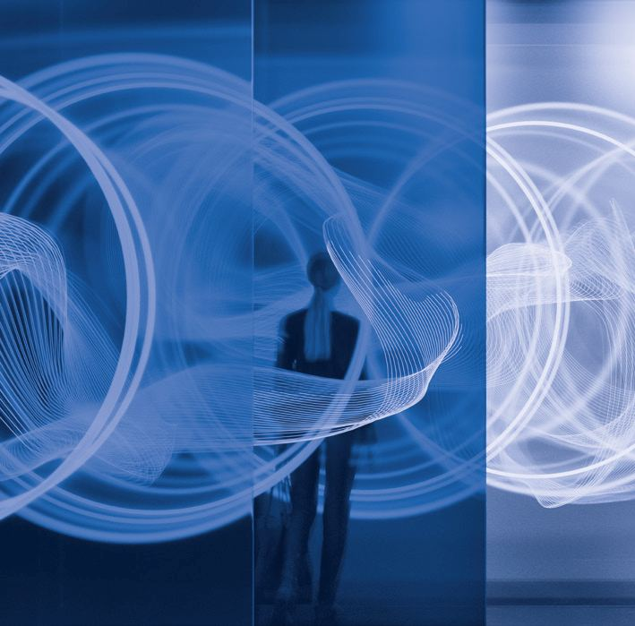
01. Innovazione
Approccio innovativo al mercato e ai settori di riferimento grazie a partner d’eccellenza e soluzioni all’avanguardia, capaci di rispondere e anticipare i bisogni dei clienti per ottenere performance migliori e ridurre le inefficienze.
02. Servizio tecnico
Elevato servizio tecnico nelle fasi di pre e post vendita e formazione tecnica, per ascoltare e comprendere le esigenze dei clienti e offrire la soluzione migliore.
03. Soluzioni integrate
Non solo prodotti ma soluzioni integrate a 360° per rispondere alle esigenze dei clienti e del loro contesto di riferimento.
OBIETTIVO spiegare i tre pilastri, uno alla volta.
Innovazione entra da solo → "Lavoriamo con partner d'eccellenza per anticipare i bisogni dei clienti: più performance, meno inefficienze."
CLIC 1 Servizio tecnico → "Pre-vendita, post-vendita e formazione: ascoltiamo per proporre la soluzione migliore."
CLIC 2 Soluzioni integrate → "Non solo prodotti, ma soluzioni a 360° costruite sul vostro contesto."
Il confronto
Telmotor e generalisti a confronto
| Generalista | Telmotor | |
| Offerta | Servizi logistici e distributivi | Servizio tecnico · Soluzione integrata · Innovazione |
| Incidenza prodotti non tecnologici | 40% con inserimento di prodotti ITS (idrotermosanitari) | 10% |
| Tecnici / organico | 5% | 30% |
| Tecnici / commerciali | 1 : 2,5 | 2 : 1 |
| Fatturato per filiale | 8 mln€ | 20 mln€ |
| Fatturato al banco | 20-50% | 1,5% |
| Certificazioni | Reseller | Solution Partner |
| Brand | Offerta ampia e alternativa | Selezionati e complementari |
| Progetti digitali | E-commerce | NExT · Siemens Xcelerator |
| Academy | 50 giornate formative: workshop di prodotto ed eventi al banco | 260 giornate con docenti qualificati · +1.500 ore di formazione tecnica · +1.000 partecipanti/anno · +1.000 studenti (School Academy) |
OBIETTIVO far emergere la differenza rispetto a un distributore generalista. È la slide più forte: rallenta.
La tabella entra con la sola colonna "Generalista" visibile.
"Partiamo da come lavora un distributore generalista: servizi logistici, 40% di prodotti non tecnologici, 5% di tecnici, molto fatturato al banco, ruolo da reseller."
CLIC → si rivela la colonna Telmotor.
"Ora guardate noi: 30% di tecnici sull'organico, 2 tecnici per ogni commerciale, 20 milioni di fatturato per filiale, solo 1,5% al banco. Siamo Solution Partner, non reseller. Brand selezionati e complementari, progetti digitali come NExT e Siemens Xcelerator, e 260 giornate formative l'anno."
DOMANDA AL CLIENTE "Oggi, quanto supporto tecnico ricevete dal vostro fornitore?"
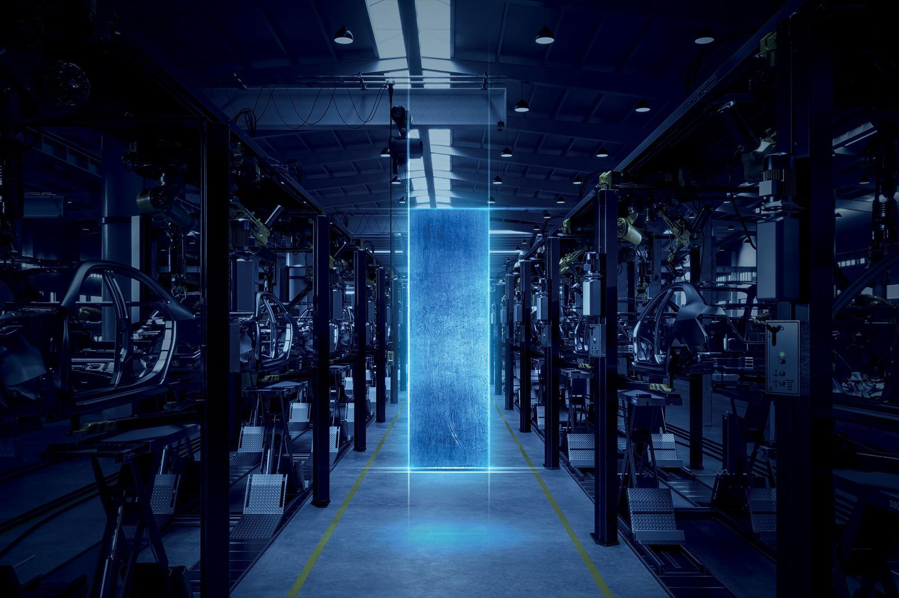
Area di business
Industry Automation
Telmotor guida i suoi clienti nella scelta dei prodotti e delle tecnologie necessarie per la progettazione di impianti e linee di automazione, aiutandoli a migliorare le performance produttive, ottimizzare l’efficienza energetica e ridurre tempi e costi di processo.
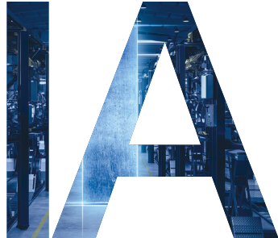
OBIETTIVO aprire il capitolo Industry Automation.
Animazione automatica.
"Primo ambito: Industry Automation. Guidiamo i clienti nella scelta di prodotti e tecnologie per progettare impianti e linee di automazione, per migliorare le performance, ottimizzare l'efficienza energetica e ridurre tempi e costi di processo."
Industry Automation
Prodotti e soluzioni
Automation PLC
PLC / HMI-PC industriali-supervisione / Reti industriali / Teleassistenza / Sistemi di visione / Bordo macchina / Condizionamento segnali
Automation Drive
Motion control / Sistemi di azionamento AC-AC, AC-DC, multiasse AC-DC-AC / Motori e servomotori / Riduttori / Trasduttori e strumentazione di processo
Elettromeccanica
Controllo industriale / Sicurezza funzionale / Armadi di comando / Sistemi di climatizzazione / Sistemi di interfaccia uomo-macchina / Bordo macchina / Consulenza UL
Digital Innovation
Cobot / Software per la progettazione, simulazione e analisi / Cloud / Edge computing / Intelligenza artificiale / Manutenzione predittiva / Realtà aumentata / Cybersecurity
→ Alcune soluzioni sono sviluppate in collaborazione con Diginnova
OBIETTIVO mostrare l'ampiezza dell'offerta, una colonna per clic.
CLIC 1 Automation PLC → PLC, HMI, reti industriali, teleassistenza, sistemi di visione.
CLIC 2 Automation Drive → motion control, azionamenti, motori e servomotori, riduttori.
CLIC 3 Elettromeccanica → controllo industriale, sicurezza funzionale, armadi, consulenza UL.
CLIC 4 Digital Innovation → cobot, simulazione, cloud, edge, AI, manutenzione predittiva, cybersecurity. Alcune soluzioni con Diginnova.
SUGGERIMENTO soffermati sulla colonna più vicina alle esigenze del cliente.
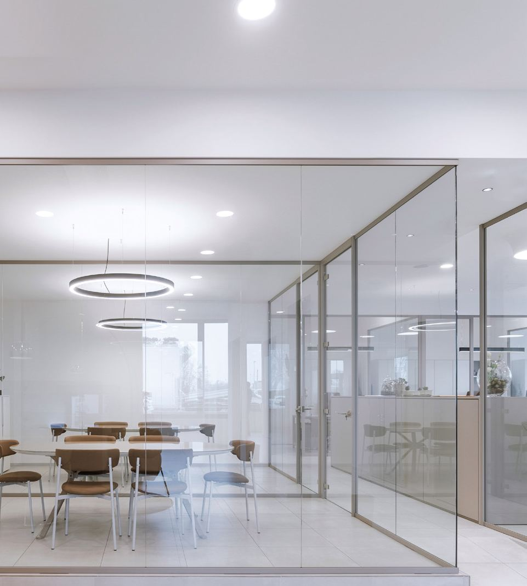
Industry Automation
Servizi pre e post vendita
Assistenza tecnica, consulenza, formazione e i migliori prodotti e soluzioni negli ambiti:
- Scelta dei migliori prodotti e soluzioni
- Safety e UL
- Digitalizzazione
- Avviamento cobot
- Componenti e impianti bordo macchina
- Ottimizzazione dei cicli/loop
- Messa in servizio di soluzioni Drive
- Applicazione di tutti i prodotti (Logo, PLC Siemens, Safety, HMI, reti, Motion, etc.)
OBIETTIVO il servizio come valore aggiunto.
CLIC → compare l'elenco dei servizi.
"Al prodotto affianchiamo assistenza tecnica, consulenza e formazione: dalla scelta della soluzione a Safety e UL, digitalizzazione, avviamento cobot, ottimizzazione dei loop, fino alla messa in servizio dei drive."
Industry Automation
Certificazioni e partnership
Telmotor è l’unico distributore Solution Partner di Siemens nel settore Industry Automation e Drive Technologies ed è anche Approved Partner Value Added Reseller Siemens.
La professionalità dell’azienda è riconosciuta da:
- SiemensSolution Partner di Siemens, Approved Partner Value Added Reseller
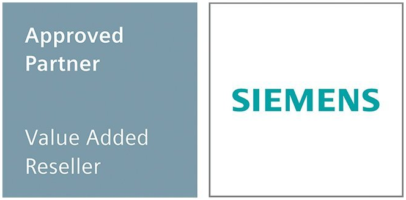
- SickElite Distributor Partner
- BalluffSolution Partner
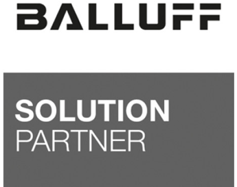
- RittalIndustry Solution Advanced
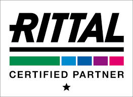
- Universal RobotsPreferred Partner
OBIETTIVO credibilità tramite le certificazioni.
Il testo principale entra da solo.
"Telmotor è l'unico distributore Solution Partner di Siemens per Industry Automation e Drive Technologies, ed è anche Approved Partner Value Added Reseller."
CLIC 1 → compare il riquadro dei riconoscimenti e la riga Siemens.
CLIC 2 → gli altri partner entrano in sequenza: Sick (Elite Distributor), Balluff (Solution Partner), Rittal (Industry Solution Advanced), Universal Robots (Preferred Partner).
MESSAGGIO CHIAVE sono i produttori stessi a certificare la nostra competenza.
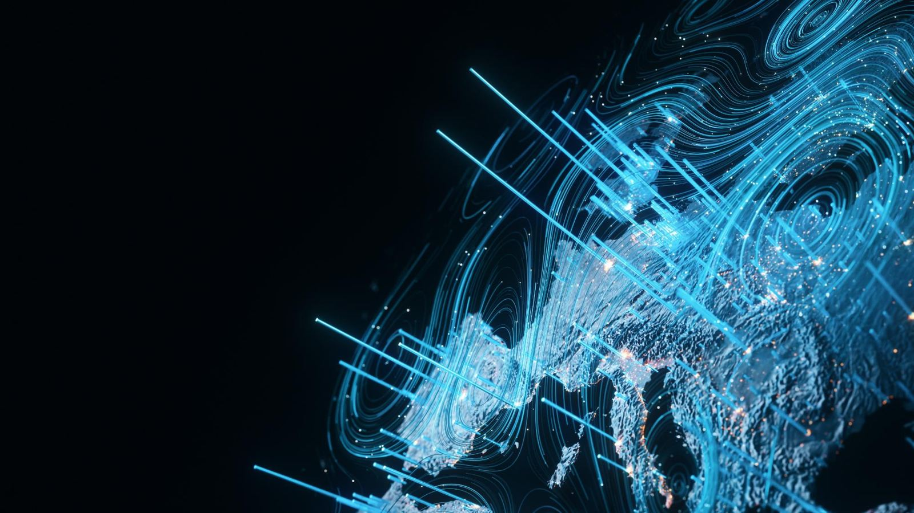
Industry Automation
Maggiori brand distribuiti
- AB TRASFORMATORI
- BALLUFF
- BOTTER
- CABUR
- CEMBRE
- COGNEX
- COMITES COSMOTEC
- DATASENSING
- DKC EUROPE
- ELETTROMECCANICA CDC
- EUROTEK
- EXOR INTERNATIONAL
- GARDNER DENVER
- GEFRAN
- HARDWARE SOLUTIONS
- ILME
- IRINOX
- LEUZE ELECTRONIC
- LIKA ELECTRONIC
- LOVATO
- MATRIX VISION
- NEW ELFIN
- OMRON
- PEPPERL+FUCHS
- PHOENIX CONTACT
- PILZ
- PIZZATO
- PMA
- RITTAL
- SCHMERSAL
- SENECA
- SICK
- SIEMENS
- TEAFLEX
- TURCK BANNER SRL
- UNIVERSAL ROBOTS
- WIMEX
OBIETTIVO mostrare la qualità del portafoglio Industry.
CLIC → compaiono i brand.
"Lavoriamo con i marchi di riferimento del settore, tra cui Siemens, Sick, Phoenix Contact, Pilz, Omron, Rittal e Universal Robots: brand selezionati e complementari."
Industry Automation
Referenze
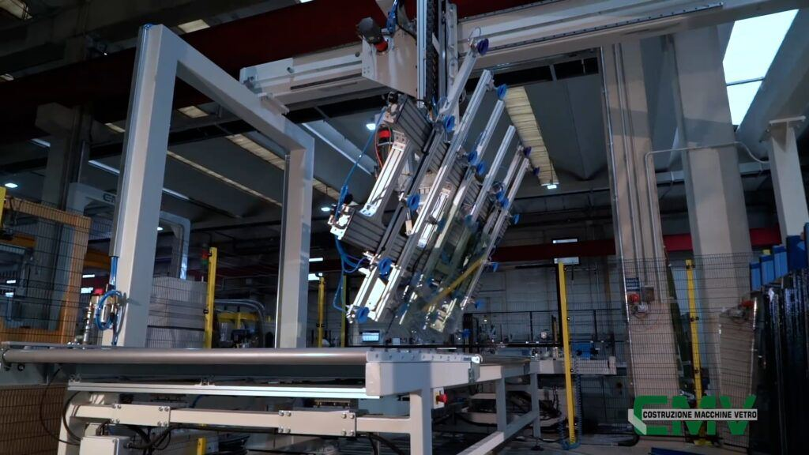
Studio di fattibilità del progetto, fornitura dei materiali di automazione industriale e messa in servizio.
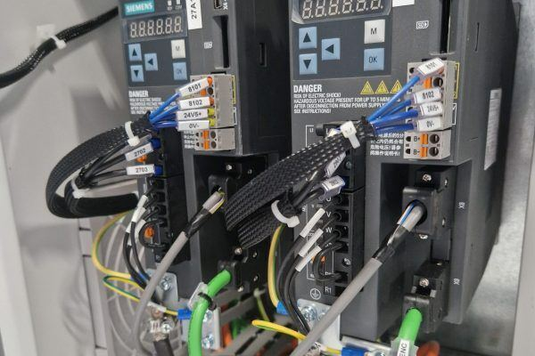
Consulenza tecnica per la ricerca di soluzioni più idonee nell’Industry Automation e nel Drive Motion e training sull’utilizzo dei tool di selezione prodotto e progettazione.
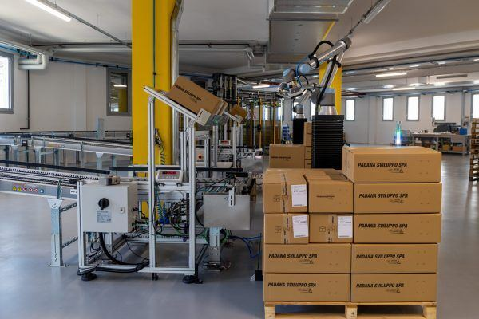
Installazione di due pallettizzatori di fine linea collaborativi, a servizio del magazzino automatizzato.
OBIETTIVO prove concrete. Un caso per clic.
CLIC 1 CMV Glass, Brusaporto → studio di fattibilità, fornitura e messa in servizio.
CLIC 2 Univision, Seregno → consulenza su Industry Automation e Drive Motion + formazione sui tool di selezione.
CLIC 3 Padana Sviluppo, Molinetto → due pallettizzatori collaborativi di fine linea al servizio del magazzino automatico.
SUGGERIMENTO scegli il caso più vicino al settore del cliente e raccontalo come una storia.
Industry Automation
Referenze
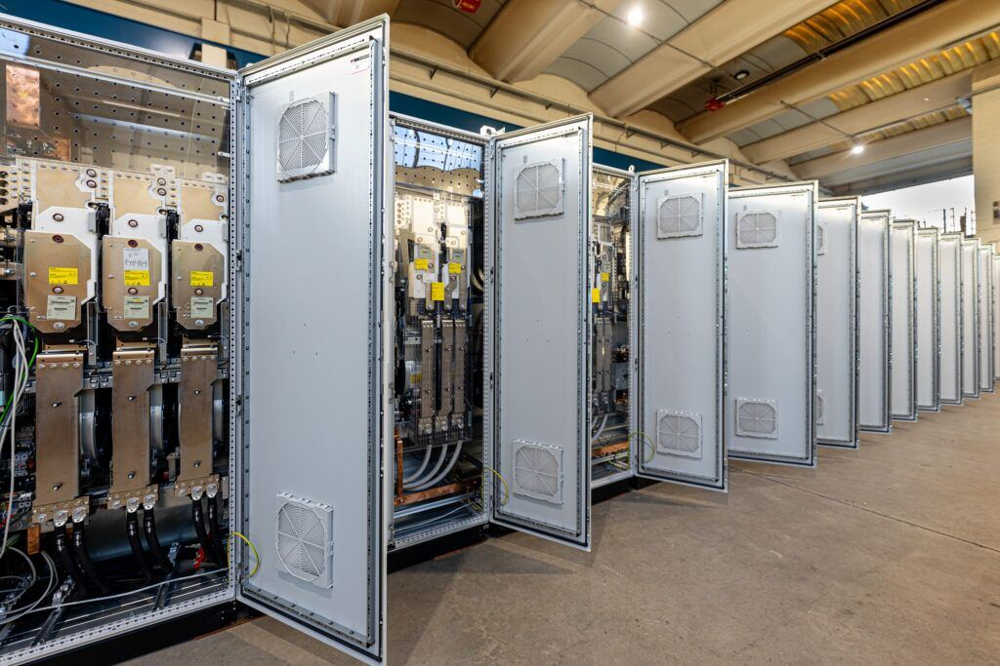
Realizzazione di quadri di automazione, utilizzando materiali dei top fornitori: motori, drive, PLC e componenti di elettromeccanica Siemens con carpenterie Rittal.
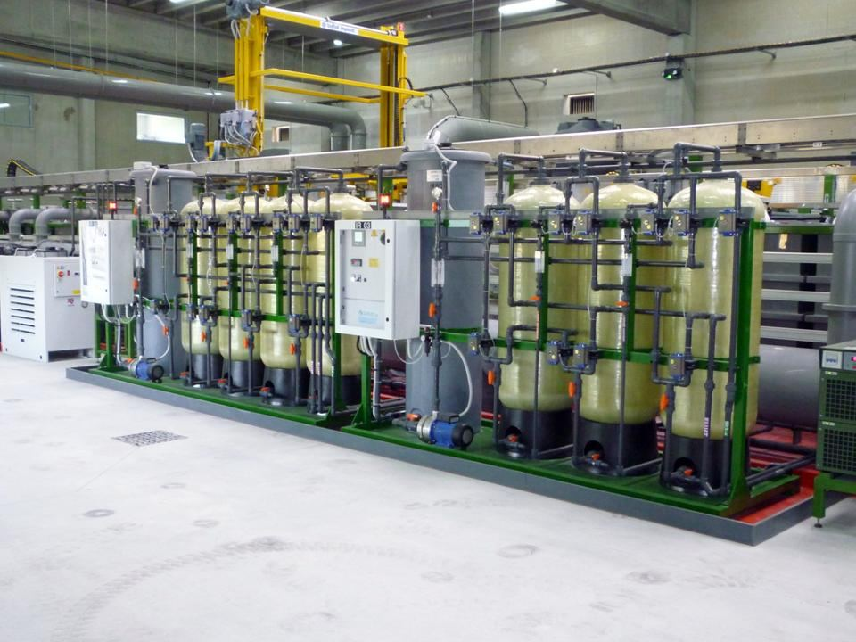
Dotazione di una comunicazione veloce e performante dell’impianto durante il suo funzionamento, per garantire una gestione efficiente del flusso dei dati.
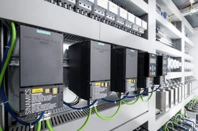
Supporto alla gestione degli assi tramite l’uso di oggetti tecnologici per una gestione ottimale del software PLC, sviluppato internamente.
OBIETTIVO altri casi Industry.
CLIC 1 Salico Automation, Cremella → quadri di automazione con Siemens e carpenterie Rittal.
CLIC 2 Italplant, Chiari → comunicazione veloce e performante dell'impianto, flusso dati efficiente.
CLIC 3 BMB Brescia → gestione assi con oggetti tecnologici per il software PLC sviluppato internamente.
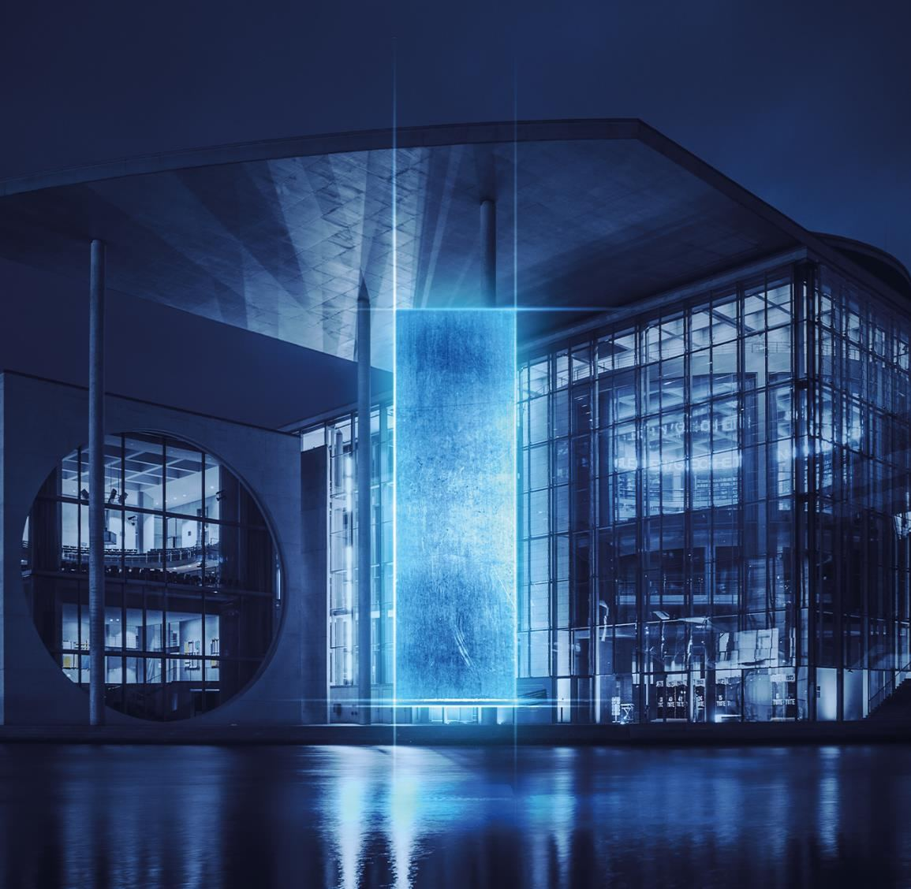
Area di business
Energy & Lighting Solutions
Telmotor offre supporto nella progettazione e realizzazione di sistemi completi di distribuzione e gestione dell’energia e della luce, attraverso soluzioni human friendly, altamente tecnologiche ed efficienti, in grado di coniugare funzionalità ed estetica in spazi sempre più intelligenti.
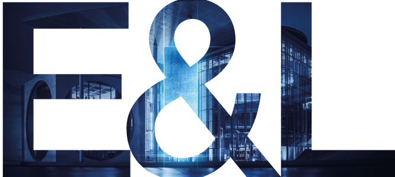
OBIETTIVO aprire il capitolo Energy & Lighting.
Animazione automatica.
"Secondo ambito: Energy & Lighting. Supportiamo la progettazione e la realizzazione di sistemi completi di distribuzione e gestione dell'energia e della luce: soluzioni tecnologiche ed efficienti, che uniscono funzionalità ed estetica."
Energy & Lighting
Prodotti e soluzioni
Media Tensione
Celle di Media Tensione / Trasformatori di Media Tensione / Relè di protezione MT CEI 0-16 / Accessori per cavi / Accessori per cabina
Bassa Tensione
Interruttori / Quadri Power Center / Quadri Motion Control Center (MCC) / Quadri di distribuzione secondaria
Green building
Soluzioni per impianti fotovoltaici / Soluzioni E-Mobility
Comfort
Konnex (KNX) / HVAC / Domotica e sistemi integrati
Impianti speciali
Sistemi di rivelazione incendio e gas / Sistemi di evacuazione sonora / Rivelazione intrusione / Controllo accessi / Videosorveglianza - TVCC
Soluzioni BMS
Controllori per l’automazione degli edifici / Pannelli di controllo / Altri componenti di impianto / Software Desigo CC
Reti
Infrastruttura di rete dati / Infrastrutture di rete dati e cybersecurity dedicata a sistemi BMS / Soluzioni audio video conferenza / Digital Signage / Telefonia e Collaboration
Illuminazione ordinaria
Illuminazione decorativa / Illuminazione funzionale
Illuminazione di emergenza
→ Soluzioni sviluppate in collaborazione con Diginnova
OBIETTIVO panoramica dell'offerta Energy & Lighting.
CLIC 1 Prima riga → Media e Bassa Tensione, Green building (fotovoltaico, e-mobility), Comfort (KNX, HVAC, domotica), Impianti speciali (incendio, intrusione, TVCC).
CLIC 2 Seconda riga → Soluzioni BMS, Reti, Illuminazione ordinaria e di emergenza.
CLIC 3 → nota Diginnova: "Alcune soluzioni le sviluppiamo con il network Diginnova."
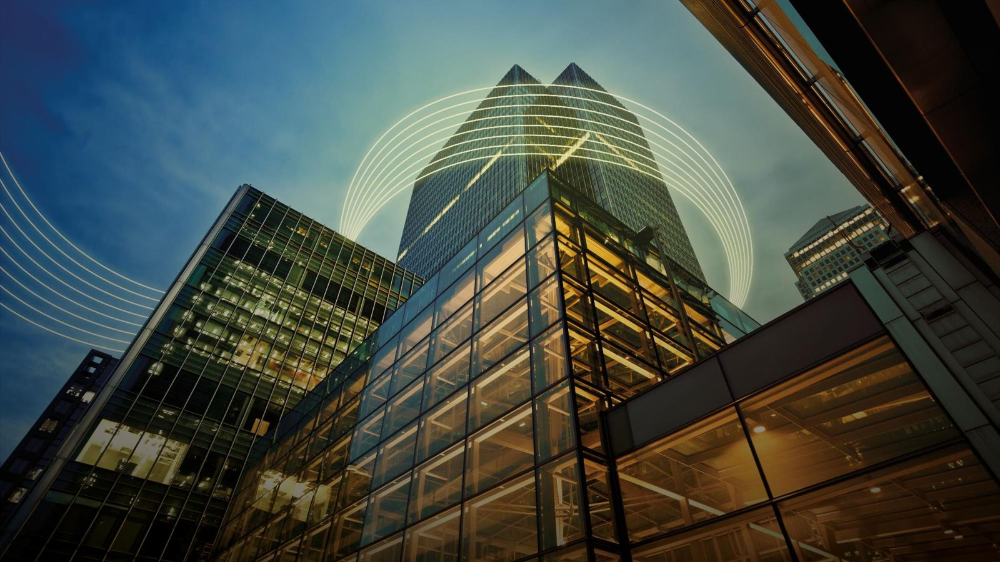
Energy & Lighting
Servizi pre e post vendita
Consulenza, fornitura, formazione, manutenzione e assistenza nei seguenti ambiti:
- Quadri di bassa tensione
- Quadri di media tensione
- Progettazione illuminotecnica: concept di progetto, verifica illuminotecnica, posizionamento corpi illuminanti, dimensionamento dei sistemi per impianti, elaborazione del layout di progetto
- Assistenza in cantiere, project management e programmazione
- Supervisione, IoT, Building Technology, HVAC e integrazioni
OBIETTIVO il servizio anche in Energy & Lighting.
CLIC → compare l'elenco.
"Consulenza, fornitura, formazione, manutenzione e assistenza: quadri di bassa e media tensione, progettazione illuminotecnica completa, assistenza in cantiere e project management, supervisione, IoT e Building Technology."
Energy & Lighting
Brand distribuiti
Energy Solutions · 78 brand
- A.M.R.A.
- AB TRASFORMATORI
- ARTELETA INTERNATIONAL
- B.E.G. ITALIA
- BEHR BIRCHER
- BETA UTENSILI
- BETTINI VIDEO
- BOTTER ELETTROTECNICA
- BRADY
- CABUR
- CAME ITALIA
- CANALPLAST
- CEAM CAVI SPECIALI
- CELLPACK BBC ITALIA
- CEMBRE
- COREX
- CRESTRON
- DEHN ITALIA
- DIGIMAX
- DKC EUROPE
- DKC POWER SOLUTIONS
- EAE ITALIA
- ELCART DISTRIBUTION
- ELCOS
- ELETROMECCANICA PIOSSASCO
- ELETTROMECCANICA C.D.C.
- ERGO DESIGN & TECHNOLOGY
- EUROTEK
- FEMI-CZ
- FINDER
- FISCHER ITALIA
- FLUKE ITALIA
- FRER
- GEWISS
- GIOVENZANA INTERNATIONAL BV
- HAGER BOCCHIOTTI
- ICM INDUSTRIA CAVI MERLOTTI
- ILME
- IMEFY
- INDUSTRIE POLIECO M.P.B.
- IRINOX
- ITALWEBER
- ITEM
- LA TRIVENETA CAVI
- LAFER
- LAPP ITALIA
- LOVATO ELECTRIC
- MAICO ITALIA
- NEW ELFIN
- NICE
- OEC
- ORTEA
- PALAZZOLI
- PECSO CAVI
- PERRY ELECTRIC
- PHOENIX CONTACT
- PM FLEX
- QUBIX
- RCF
- S.E.M. SOCIETÀ ELETTR. MARCHE
- SAPISELCO
- SICON
- SIEMENS
- SIRENA
- SOVEM
- SPECIALCAVI BALDASSARI
- STULZ
- SVELT
- TEAFLEX
- TECSYSTEM
- THYTRONIC
- TMC TRANSFORMERS
- TURCK BANNER
- UNIVERSAL ROBOTS
- VAREL
- VERTIV
- VIMAR
- WIMEX
Lighting Solutions · 94 brand
- 3F FILIPPI SPA
- ADVANCE INNOVATIONS
- AEOS
- AI LATI ZAFFERANO SRL
- ARTELETA INTERNATIONAL
- ARTEMIDE
- B.E.G. ITALIA
- BAROVIER&TOSO
- BEGHELLI
- BELFIORE
- BETTINI VIDEO
- BUZZI & BUZZI
- CARIBONI
- COMMEND
- CRESTRON
- DAVIDE GROPPI
- DELTA LIGHT ITALIA
- DIN SICHERHEITSTECHNIK ITALIA
- DIOMEDE
- DURALAMP
- ECLETTIS
- EELECTRON
- EKINEX
- ELEKTROTECNIKGES
- ERCO ILLUMINAZIONE
- ERGO DESIGN & TECHNOLOGY
- ESSE-CI
- EURO UNITECH
- EUROTEK
- EXENIA
- F.L.I. FORMULA LUCI ITALIA
- FABAS LUCE
- FAEL
- FEILO SYLVANIA ITALY
- FIBRETEC
- FLOS
- FONTANAARTE
- FOSCARINI
- GLIP
- GRUPPO RAINA
- IDEAL LUX
- IESS
- IGUZZINI ILLUMINAZIONE
- INGO MAURER
- INOTEC
- INTRA LIGHTING
- IVELA
- KREON
- LA FILOMETALLICA
- LEDS-C4
- LEDVANCE
- LINEA LIGHT
- LINERGY
- LLD LIGHT
- LOMBARDO
- LOUIS POULSEN
- LUCE&LIGHT
- LUCEPLAN
- LUTRON
- MARINO CRISTAL
- MOLTO LUCE GMBH
- NOBILE ITALIA
- NOVALUX
- OPPLE
- OTY
- PAN INTERNATIONAL
- PANZERI CARLO
- PERFORMANCE IN LIGHTING
- PHILIPS/SIGNIFY
- PHOEBUS
- PLATEK
- PROGEA
- PROLICHT
- REGENT ILLUMINAZIONE
- REGGIANI
- ROSSINI ILLUMINAZIONE
- SANTA&COLE
- SFORZIN ILLUMINAZIONE
- SICOM SRL
- SIDE
- SIEMENS
- SIMES
- SLV ITALIA
- T.C.I. TELECOMUNICAZIONI ITALIA
- TARGETTI SANKEY
- TEC-MAR
- TECNEL
- TRILUX
- TUTONDO
- VANDERBILT
- VIABIZZUNO
- VIBIA LIGHTING
- XAL
- ZG LIGHTING
OBIETTIVO ampiezza del portafoglio Energy & Lighting.
CLIC 1 → brand Energy Solutions.
CLIC 2 → brand Lighting Solutions.
"Un portafoglio molto ampio: dall'energia ai grandi nomi del design della luce come Flos, Artemide, iGuzzini, Louis Poulsen."
SUGGERIMENTO non leggere i nomi, lascia scorrere e cita 2-3 marchi noti al cliente.
Energy & Lighting
Referenze
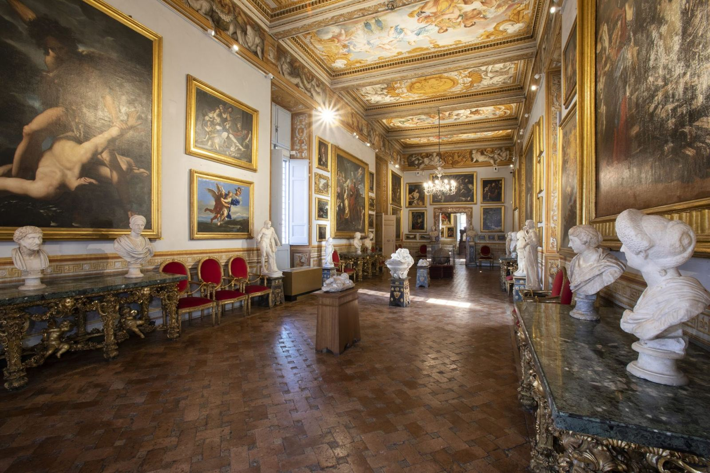
Progettazione totale dell’illuminazione, in regime di Fondi PNRR in relazione all’efficientamento energetico.
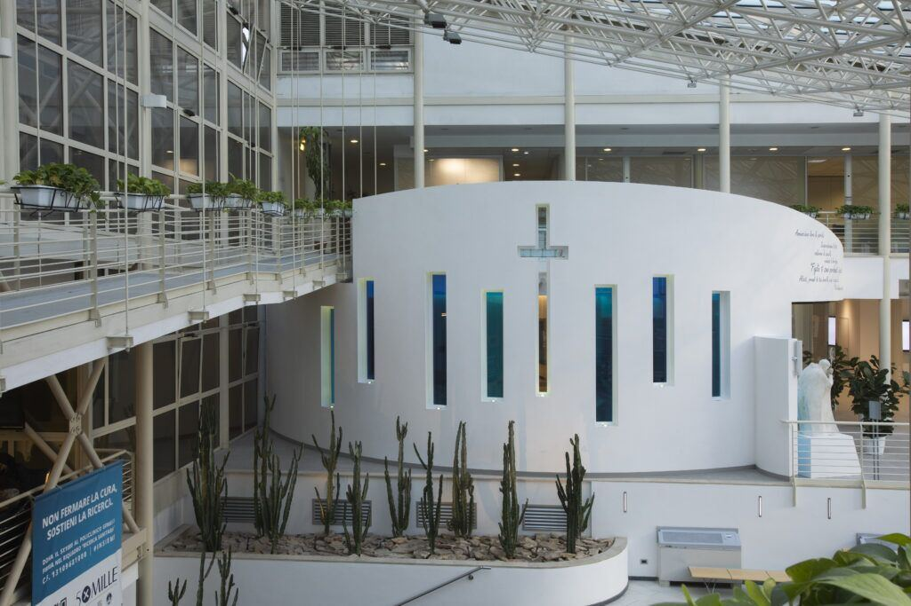
Realizzazione del progetto illuminotecnico che, rispettando le due diverse altezze della nuova struttura interna dell’Ospedale, ha concepito una soluzione di illuminazione omogenea e controllata per l’intero ambiente.
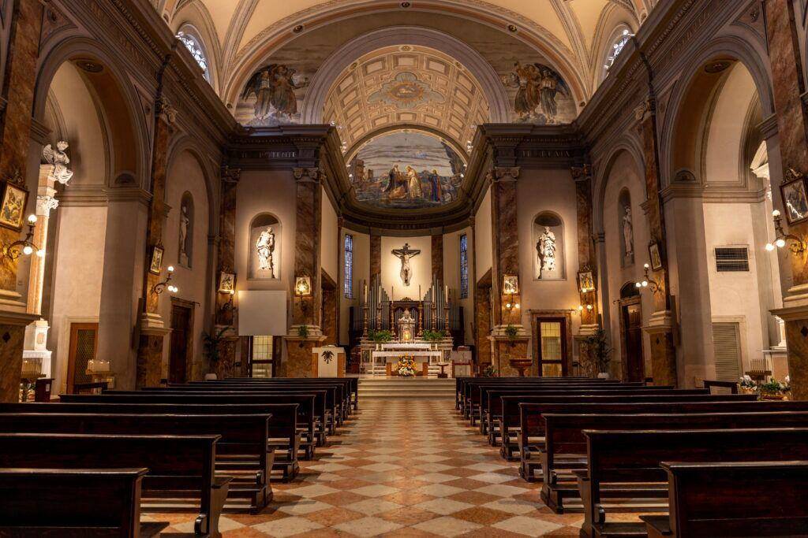
Riqualificazione dell’impianto elettrico, di gestione e di illuminazione, per una soluzione integrata ed efficiente.
OBIETTIVO referenze Lighting di prestigio.
CLIC 1 Galleria Spada, Roma → progettazione totale dell'illuminazione con fondi PNRR per l'efficienza energetica.
CLIC 2 Cappella Policlinico Gemelli, Roma → illuminazione omogenea e controllata su due altezze diverse.
CLIC 3 Chiesa Santa Lucia, Verona → riqualificazione dell'impianto elettrico, di gestione e di illuminazione.
Energy & Lighting
Referenze
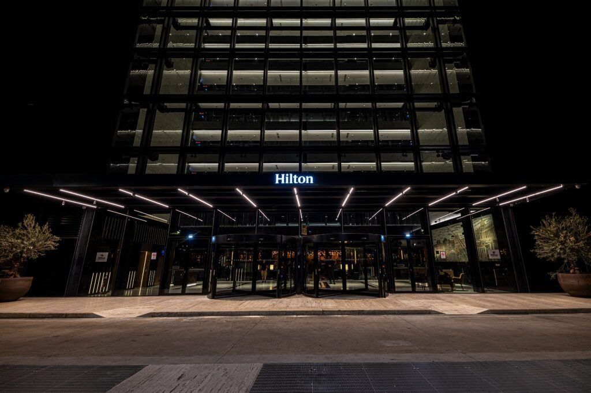
Messa in opera dell’illuminazione complessiva di tutti gli ambienti e produzione di tutti i corpi illuminanti realizzati custom su progetto dell’architetto Lorenzo Bellini.
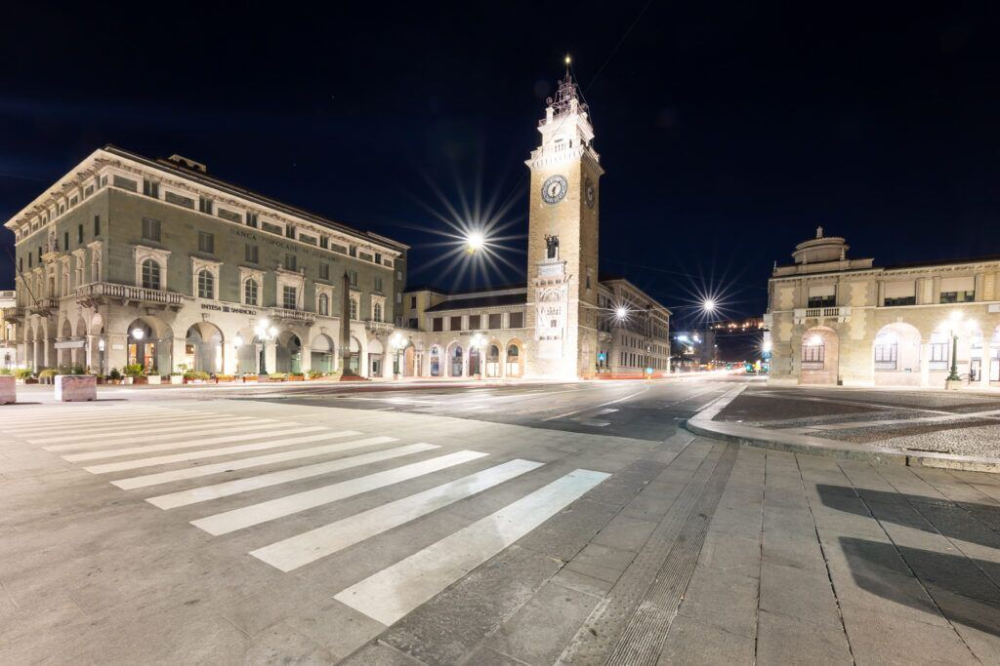
Progettazione di un sistema di illuminazione omogeneo, esteso a tutti i monumenti e edifici pubblici presenti nei lotti di riqualificazione.
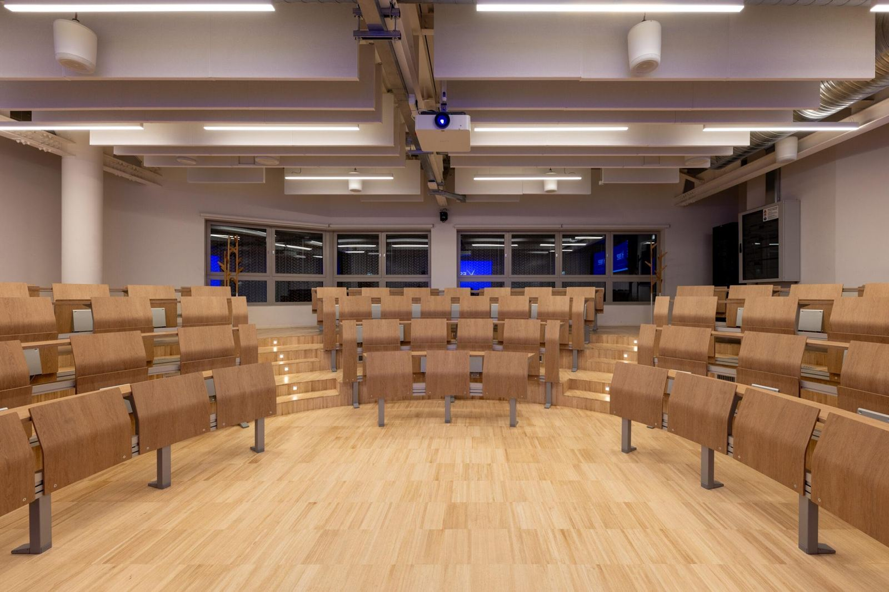
Realizzazione dell’impianto illuminotecnico per gli ambienti interni ed esterni, riducendo i costi del progetto inizialmente previsto.
OBIETTIVO altre referenze Lighting.
CLIC 1 Hotel Hilton La Lama, Roma → illuminazione complessiva e corpi illuminanti custom su progetto dell'arch. Lorenzo Bellini.
CLIC 2 Centro Piacentiniano, Bergamo → illuminazione omogenea per monumenti ed edifici pubblici.
CLIC 3 ESCP Business School, Torino → impianto interno ed esterno, con costi ridotti rispetto al progetto iniziale.
Formazione
Academy
Corsi specialistici per costruire o ampliare le conoscenze dei professionisti di oggi e di domani, attraverso lezioni frontali, esercitazioni pratiche, workshop e lavori di gruppo con docenti qualificati.
Attraverso la School Academy attiviamo percorsi formativi su misura e collaborazioni con le scuole superiori e gli istituti tecnici di tutta Italia per il riconoscimento del merito.
OBIETTIVO la formazione come elemento distintivo.
CLIC → compaiono i numeri dell'Academy e la School Academy.
"Con l'Academy formiamo i professionisti di oggi e di domani: 260 giornate formative, 1.500 ore di formazione tecnica, oltre 1.000 partecipanti l'anno e 50 corsi personalizzati presso i clienti. Con la School Academy collaboriamo con scuole superiori e istituti tecnici."
DOMANDA AL CLIENTE "Il vostro team tecnico avrebbe bisogno di formazione su qualche tecnologia?"
Academy
Le attività dell’Academy
Cosa
- Prodotti
- Normative
- Strumenti
- Software
Per chi
- Architetti
- Ingegneri
- Periti
- Studenti
- Professionisti e impiegati tecnici
Dove
- Sedi Telmotor
- Aziende clienti
- Ordini convenzionati
- Location di prestigio
- Webinar online
OBIETTIVO rendere concreta l'Academy.
CLIC 1 COSA → prodotti, normative, strumenti, software.
CLIC 2 PER CHI → architetti, ingegneri, periti, studenti, professionisti e impiegati tecnici.
CLIC 3 DOVE → sedi Telmotor, aziende clienti, ordini convenzionati, location di prestigio, webinar online.
NExT, la nuova customer experience
Il portale unico con tutti i servizi digitali Telmotor
E-commerce
Scegli tra gli oltre 260.000 articoli acquistabili online, con offerte e promozioni periodiche.
Tracking consegne
Monitora le spedizioni, controlla lo stato di avanzamento degli ordini e programma le consegne.
Servizio resi
Richiedi sostituzioni, gestisci i resi e controlla lo stato di avanzamento.
Richiesta offerte
Gestisci le tue offerte, sia richieste online che ricevute dal commerciale di riferimento.
News fornitori
Rimani sempre aggiornato sulle ultime novità dei nostri partner.
Documenti
Consulta documenti, DDT, schede tecniche e fatture nello storico ordini.
OBIETTIVO presentare NExT, il portale digitale.
"NExT è il portale unico con tutti i servizi digitali Telmotor."
CLIC 1 → E-commerce (oltre 260.000 articoli) e Tracking consegne.
CLIC 2 → Servizio resi e Richiesta offerte.
CLIC 3 → News fornitori e Documenti (DDT, schede tecniche, fatture).
SUGGERIMENTO se possibile, proponi una demo live del portale.
Per un futuro sostenibile
Da sempre Telmotor promuove un modo di fare impresa sostenibile e rispettoso delle persone e dell’ambiente. Sensibilità verso i temi ESG, azioni e strategie CSR e obiettivi futuri concreti: da qui hanno origine idee, azioni e impegno diffuso.
Community
Il progetto di solidarietà sociale, gestito dai collaboratori, che desidera essere un aiuto concreto a realtà impegnate nel no profit perché capaci di cogliere il bisogno, di fare sistema e costruire risposte per la persona, per la famiglia, per l’altro, per il gruppo.
OBIETTIVO valori e sostenibilità.
Il primo blocco entra da solo.
"Facciamo impresa in modo sostenibile e rispettoso delle persone e dell'ambiente: attenzione ai temi ESG, strategie CSR e obiettivi concreti."
CLIC → Community.
"Community è il nostro progetto di solidarietà sociale, gestito direttamente dai collaboratori, a sostegno di realtà no profit."
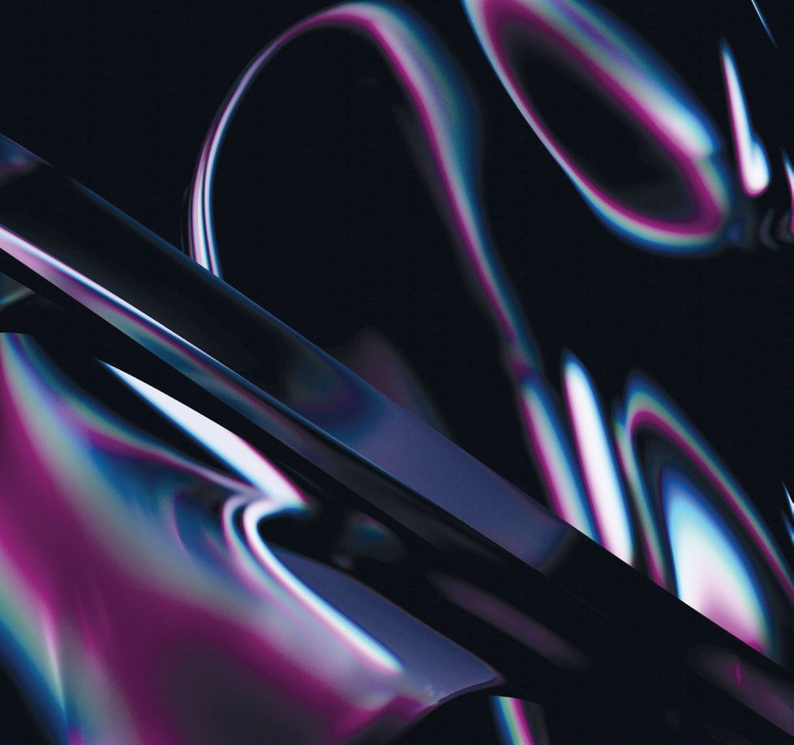
Il network
Diginnova
Il network di Telmotor dedicato alla digital innovation
Reti e Cybersecurity, Building Automation, Robotica, Virtual Commissioning, Intelligenza Artificiale: soluzioni, strumenti operativi e servizi integrati per accompagnare i clienti nella digital transformation.
diginnova.it
OBIETTIVO introdurre Diginnova.
Animazione automatica.
"Diginnova è il network di Telmotor dedicato alla digital innovation: reti e cybersecurity, building automation, robotica, virtual commissioning e intelligenza artificiale, per accompagnare i clienti nella digital transformation."
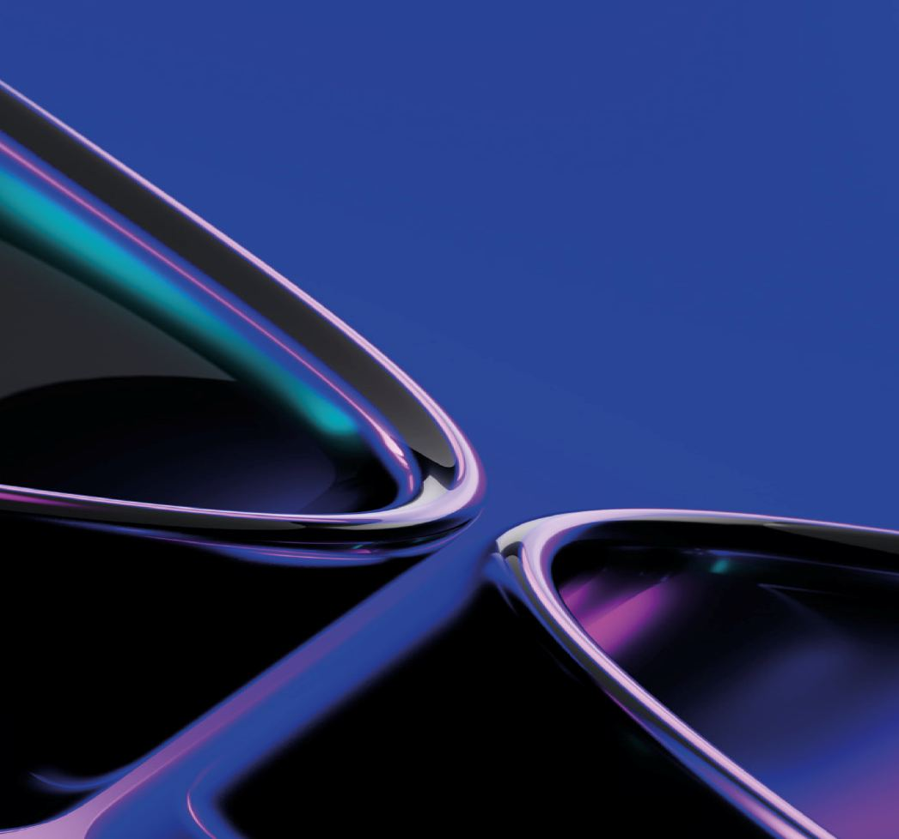
Diginnova
Soluzioni Diginnova
Cybersecurity ITCore
Per la gestione, la sicurezza e il potenziamento di network e infrastrutture digitali, attraverso servizi di cablaggio strutturato, cybersecurity IT e OT (di avviamento e avanzata), server e virtualizzazione.
Building Automation Redi
Per la sicurezza, il controllo e l’efficienza energetica degli edifici, attraverso servizi di Building Management System (BMS), gestione integrata energy & light e impianti speciali.
Industrial AI T4SM
Per accompagnare la transizione digitale 5.0 attraverso la gestione dei big data con servizi di sviluppo software di raccolta e analisi dei dati, digitalizzazione del processo produttivo e manutenzione predittiva.
OBIETTIVO le tre anime di Diginnova, una per clic.
CLIC 1 Cybersecurity (ITCore) → cablaggio, cybersecurity IT e OT, server e virtualizzazione.
CLIC 2 Building Automation (Redi) → BMS, gestione integrata energy & light, impianti speciali.
CLIC 3 Industrial AI (T4SM) → transizione 5.0: big data, digitalizzazione del processo e manutenzione predittiva.
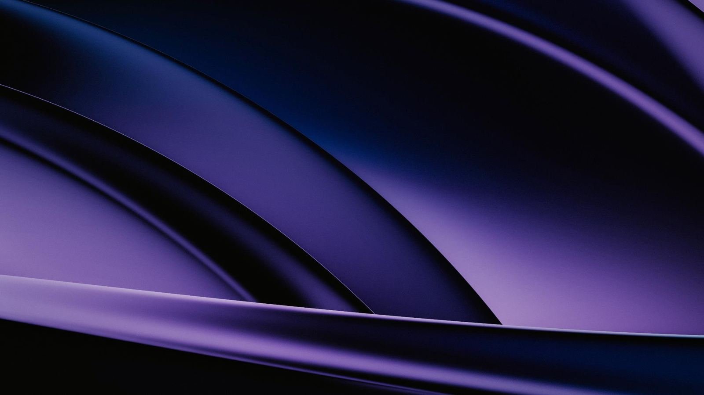
Diginnova
Servizi Diginnova
- Assessment e analisi preventiva dei contesti e sistemi esistenti
- Consulenza e supporto pre e post vendita
- Progettazione, fornitura, installazione, configurazione e testing dei sistemi
- Gestione e manutenzione, assistenza tecnica e pronto intervento
- Formazione on-site, corsi specialistici e di aggiornamento normative
OBIETTIVO chiudere il cerchio sul servizio end-to-end.
CLIC → compare l'elenco.
"Vi seguiamo in tutte le fasi: assessment iniziale, consulenza pre e post vendita, progettazione, installazione e collaudo, manutenzione e pronto intervento, fino alla formazione on-site."
Il partner per l’innovazione
Contatti
Via Zanica, 91
24126 Bergamo
info@telmotor.it
telmotor.it
P. IVA 00228060166
OBIETTIVO chiusura e prossimo passo.
Animazione automatica.
"Grazie per l'attenzione. Telmotor: il partner per l'innovazione."
CALL TO ACTION proponi un passo concreto (sopralluogo tecnico, demo NExT, corso Academy o incontro con un tecnico specialista) e fissa subito la data.
Case history
Progetti realizzati
256case history in Italia e all’estero
Dagli uffici agli hotel, dalle chiese ai musei: la progettazione illuminotecnica e le soluzioni Energy di Telmotor sul territorio. Tocca una regione per vedere i suoi progetti.
OBIETTIVO mostrare la diffusione dei progetti sul territorio.
"Ecco una selezione dei progetti che abbiamo realizzato: sono 256, soprattutto in Lombardia e nel Lazio, ma anche nel resto d'Italia e all'estero."
TOCCA UNA BARRA per aprire l'esploratore già filtrato su quella regione.
SUGGERIMENTO parti dalla regione del cliente.
Case history
Esplora i progetti
OBIETTIVO trovare in pochi secondi i progetti più vicini al cliente.
Seleziona una o più regioni a sinistra (si possono combinare). "Tutte" azzera il filtro.
Il menu Ambito restringe per tipo di progetto: uffici, hotel e ristorazione, luoghi di culto, musei, retail e così via.
Tocca una scheda per leggere il progetto completo.
DOMANDA AL CLIENTE "Quale di questi progetti somiglia di più a quello che avete in mente?"
SUGGERIMENTO i clic dentro questa slide non fanno avanzare la presentazione. Per proseguire usa le frecce o la barra in basso.
Ruota il telefono per vedere la presentazione più grande